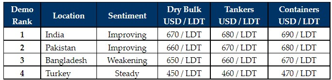

inWeekly Demolition Reports18/04/2022

With holidays descending across the Indian sub-continent for Ramadan / Eid celebrations and the rest of the world prepares for Easter weekend, it has been a comparably quieter week in terms of sales and activity.
Levels remain firm in Pakistan and India whilst Bangladesh remains somewhat muted, with domestic steel mills still refusing to engage local yards in negotiations at these higher overall levels, as Bangladeshi steel plate prices start to reflect some of the steel volatility from India.
Notwithstanding, it is expected that the Bangladeshi market will likely come back into the fray once again, especially after a month or so on the sidelines as steel prices (though volatile) remain strongly placed and this has perhaps been a period of consolidation over the traditionally softer month of Ramadan.
Away from the sub-continent waters, the Turkish markets remain muted, with declines in local and import steel, resulting in a quieter and (like the sub-continent markets) a silent week.
Overall, the supply of tonnage also remains rather sparse, with fewer wet (large LDT) units to speak of recently, given that charter rates have picked up significantly on select routes. Dry and Container sectors have also been performing rather well and this has led to an overall decline in firm and workable candidates for most of the year thus far – despite some repeat record numbers at decade-long highs above USD 700/LDT.
As such, the recycling markets remain on a firm footing overall and as the second quarter of the year gets well underway, there certainly seems as though there is still more positivity and optimism moving forward, primarily on account of continually strong showings on commodity prices and a decent demand / capacity to acquire across sub-continent locations. The Ukraine crisis certainly has its place in adding to this recent volatility in fundamentals and it’s certainly only a matter of time before this party retreats to more realistic levels.
For week 15 of 2022, GMS demo rankings / pricing for the week are as below.

📄 Download PDF: 2022-04-17psG_org.pdfSource: GMS,Inc. ,https://www.gmsinc.net/gms_new/index.php/web